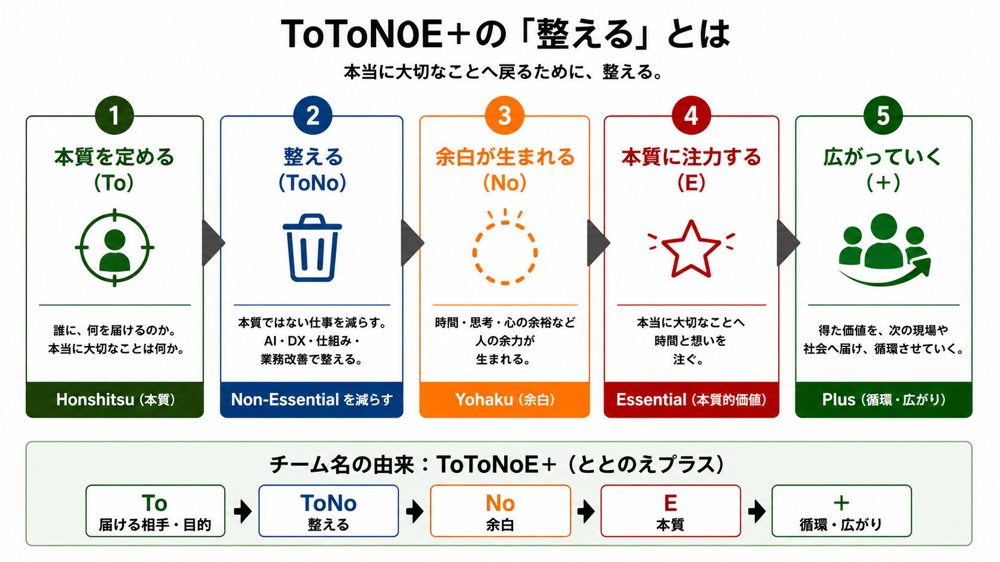
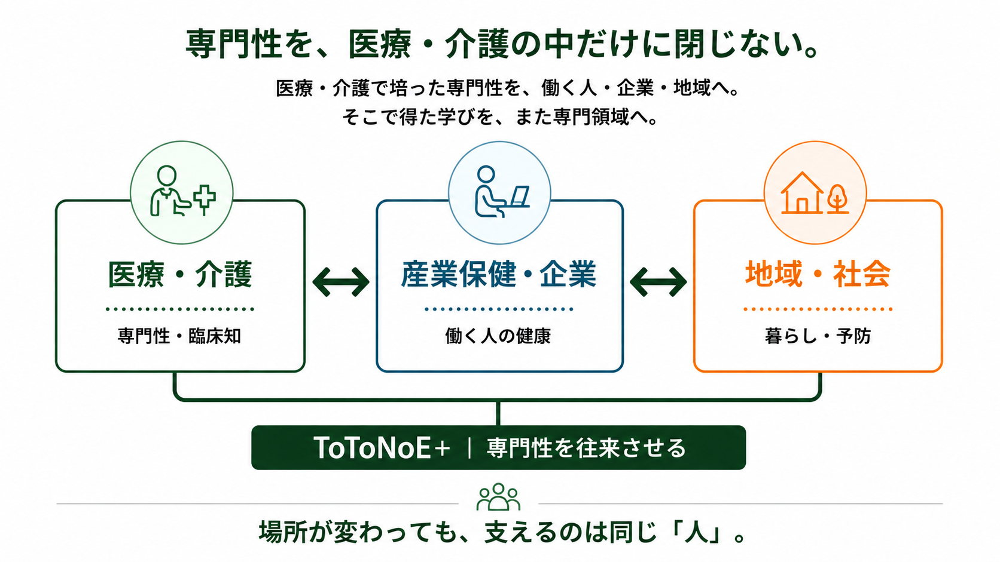
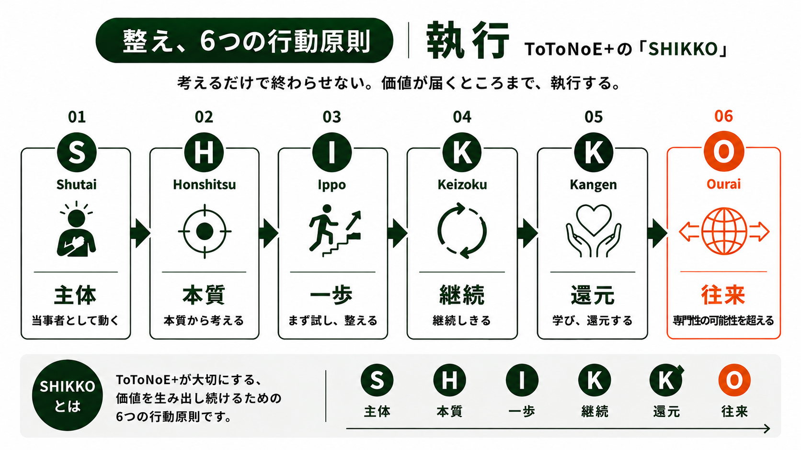

医療・介護領域
AI・DX・業務改善・教育・学びを通じて、現場が本質に向き合える時間を増やします。
WHY TOTONOE+
専門職の仕事には、記録、資料作成、情報収集、調整、連絡、会議、繰り返し業務など、多くの仕事があります。それらを否定するのではなく、まず「誰に、何を届けたいのか」「本当に大切なことは何か」を問い直す。ToToNoE+は、もっと頑張る前に、一度整えることから始めます。
WHAT IS TOTONOE+

OUR FIELD
医療・介護で培った専門性を、働く人・企業・地域へ。そこで得た学びを、また専門領域へ。場所が変わっても、支えるのは同じ「人」です。

AI・DX・業務改善・教育・学びを通じて、現場が本質に向き合える時間を増やします。
働く世代の健康と、よりよく働き続けられる環境づくりを支えます。
PHILOSOPHY
ToToNoE+は、AIやDXを目的にせず、本質ではない仕事を減らし、専門職が大切にしたいことへ向き合える余白をつくるチームです。
AI・DXは、その余白を生み出すための手段。効率化だけをゴールにせず、患者・利用者への価値提供、臨床、研究、家族との時間、自分自身の回復へ戻していきます。
専門職として成長することと、自分自身の人生を大切にすることを二者択一にしない。培ってきた専門性を、望む場所・働き方・生き方で活かせる状態を目指します。
考えるだけで終わらせず、価値が届くところまで執行するための6つの行動原則です。主体・本質・一歩・継続・還元・往来を、ToToNoE+の共通姿勢として大切にします。

SERVICE

週末のAI整え習慣、ToToNoE Weekly、法人向け支援。個人の学びから組織の実装まで、必要な深さに合わせて選べるサービスとして整理しています。